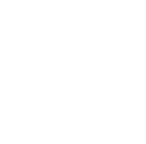
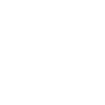
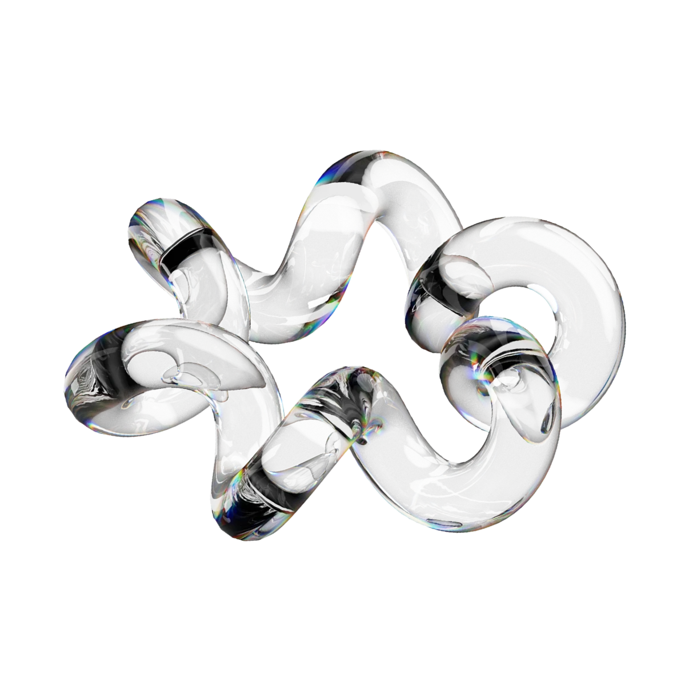

I work with interfaces, visual concepts, and graphic design, focusing on structure, clarity, and visual balance. My approach is neutral and detail-oriented — I aim to remove unnecessary noise and keep only what strengthens the composition and visual idea.
I have a technical education, which helps me think in structured and logical systems when working with design. I also have additional training in web development and design, which gives me a better understanding of how design is implemented and behaves in real projects.
[ advantages ]
/ I focus on creatingmodern designthat
staysrelevantand visually up to date /
01 //
Concept-driven design
I focus on developing strong visual ideas that guide the entire design process. Each project starts with a concept that defines the structure, style, and overall direction of the work.
02 //
Trend awareness
I continuously analyze design trends and visual directions, integrating relevant ideas into my work to keep it modern and up to date.
03 //
Flexibility
I am able to adapt to different visual styles and project directions, adjusting my approach based on the concept and desired outcome.
04 //
Studying your audience
I always start by studying the audience. I look at their needs and behavior to create design that feels clear, relevant, and visually appropriate for the project.


[ design directions ]
What I work with

Web design
I create clean and modern layouts for websites, web services and apps, focused on structure and visual clarity.
Banners & advertising
I create banners and promotional visuals with a focus on attention and clarity.
Product design
I design digital products and interfaces — from user flows to polished, consistent screens.
Logo design
I design logos that communicate brand personality and stand out visually.
Posters & print design
I design posters and print materials with strong visual composition.
Brand identity
I develop brand identities with a consistent visual direction, making them memorable.
Я работаю с интерфейсами, визуальными концепциями и графическим дизайном, уделяя внимание структуре, ясности и визуальному балансу. Мой подход — нейтральный и внимательный к деталям: я убираю лишний шум и оставляю только то, что усиливает композицию и идею.
У меня техническое образование, которое помогает мне мыслить системно и логически. Дополнительное обучение в веб-разработке и дизайне даёт мне понимание того, как дизайн реализуется и работает в реальных проектах.
[ преимущества ]
/ Я создаю современный дизайн, который остаётся
актуальным и визуально современным /
01 //
Концептуальный дизайн
Я фокусируюсь на создании сильных визуальных идей, которые определяют весь процесс дизайна. Каждый проект начинается с концепции, задающей структуру, стиль и общее направление работы.
02 //
Работа с трендами
Я постоянно анализирую дизайн-тренды и визуальные направления, интегрируя актуальные идеи в свою работу, чтобы сохранять её современность и актуальность.
03 //
Универсальность
Я умею адаптироваться к разным визуальным стилям и направлениям проектов, подстраивая свой подход в зависимости от концепции и желаемого результата.
04 //
Анализ целевой аудитории
Я всегда начинаю с изучения аудитории. Я анализирую её потребности и поведение, чтобы создавать дизайн, который выглядит понятным, релевантным и визуально уместным для проекта.
[ направления работы ]
С чем я работаю
Веб-дизайн
Я создаю чистые и современные макеты сайтов, веб-сервисов и приложений, ориентированные на структуру и визуальную ясность.
Баннеры и реклама
Я создаю баннеры и рекламные визуалы, уделяя особое внимание привлечению внимания и визуальной ясности.
Продуктовый дизайн
Я проектирую цифровые продукты и интерфейсы — от пользовательских сценариев до готовых экранов.
Дизайн логотипов
Я создаю логотипы, которые передают характер бренда и выделяются визуально.
Печатные материалы
Я разрабатываю постеры и печатные материалы с сильной визуальной композицией.
Айдентика бренда
Я создаю айдентику брендов с цельной визуальной системой, которая помогает им выделяться и оставаться в памяти аудитории.
/ Design is a way to simplify complex I create visual solutions that feel simple and clear /
/ Дизайн — это упрощение сложного. Моя работа — создавать простые и понятные визуальные системы /
I work with interfaces, visual concepts, and graphic design, focusing on structure, clarity, and visual balance. My approach is neutral and detail-oriented — I aim to remove unnecessary noise and keep only what strengthens the composition and visual idea.
I have a technical education, which helps me think in structured and logical systems when working with design. I also have additional training in web development and design, which gives me a better understanding of how design is implemented and behaves in real projects.
[ advantages ]
/ I focus on creating modern design that stays relevant and visually up to date /
/ Я создаю современный дизайн, который остаётся актуальным и визуально современным /
01 //
Concept-driven design
I focus on developing strong visual ideas that guide the entire design process. Each project starts with a concept that defines the structure, style, and overall direction of the work.
02 //
Trend awareness
I continuously analyze design trends and visual directions, integrating relevant ideas into my work to keep it modern and up to date.
03 //
Flexibility
I am able to adapt to different visual styles and project directions, adjusting my approach based on the concept and desired outcome.
04 //
Studying your audience
I always start by studying the audience. I look at their needs and behavior to create design that feels clear, relevant, and visually appropriate for the project.
[ design directions ]
What I work with
Web design
I create clean and modern layouts for websites, web services and apps, focused on structure and visual clarity.
Banners & advertising
I create banners and promotional visuals with a focus on attention and clarity.
Product design
I design digital products and interfaces — from user flows to polished, consistent screens.
Logo design
I design logos that communicate brand personality and stand out visually.
Posters & print design
I design posters and print materials with strong visual composition.
Brand identity
I develop brand identities with a consistent visual direction, making them memorable.


![]()
![]()
Let’s connect
on social media
I’m available for freelance projects, contract work, and outsourcing.